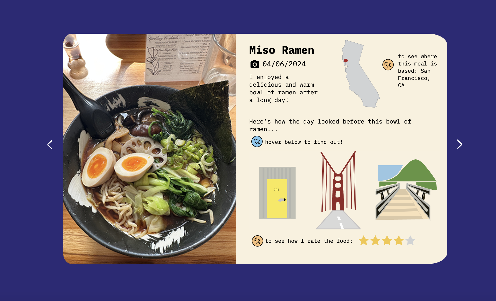

Usability Report
Key Findings
- Who was tested?
- User 1: 21 years old, undergraduate student, Majors: Managerial Economics + Science and Technology Solutions
-
User 2: 21 years old, undergraduate student, Majors: Managerial Economics + Statistics, Minor: Technology Management
Both of these individuals fall into my target audience because of their age range and specfic interests they share in content they prefer to engage with.
- What were the tasks?
- Move through Pages: Users will be tested if they are able to find and effectively use the next and previous buttons to move through the website.
- Identify buttons: Users need to identify the differences between the hovering and click buttons on the page.
- Use Click Buttons: Users are able to identify the click buttons and use them to see the interactions.
- Use Hover Feature: Hover feature is used effectively and understood.
Results
- Bugs
- No Reaction on the State Image: User attempted to click on state image and no reaction occurred
- No Reaction on Star Image: User attempted to click on star ratings and no reaction occurred
- User interactions when using “previous”: The page does not reload interactions so all past “click” features are still present if the user completes the loop and doesn’t reload the page before seeing the diary again.
- Usability Problems
- Combination of Clicks and Hover is not 100% intuitive: When users see the combination of the click and hover options, they are overwhelmed and unable to distinguish immediately that the different colored icons mean hover and click. In this situation, they focused more time on exploring the page rather than understanding the content and it made for a difficult experience.
- Starting at the middle instead of the Top of the page: Because the hover reaction is initiated by the user having their mouse over a specific part of the page, most users tend to see the hover reaction first and start at the middle of the page. When completing the hover first, they assume that is the standard for the page. Then they get confused when they see a “click” option instead.
- No clear Introduction or Ending: Without an introduction and ending users are left still questioning parts of the project. They wonder what the whole story and big picture is.
- Introduction page has static images that are clicked on: Both users attempted to interact with the static images on the front page. It was their first interaction with the page and were not immediately drawn to the next button. This caused a delay in their usage of the anticipated features.
